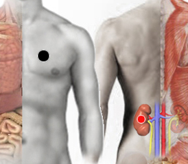

Taquicardia - "Ana Alicia"
Par
seno A ventricular - riñón

Generalidades:
Taquicardias, arritmias ideopáticas, que no responden a los fármacos comunes. Taquicardia paroxística.
Fibrilación ventricular
Se denomina fibrilación ventricular al trastorno del ritmo cardiaco con un ritmo acelerado e irregular (más de 250 latidos por minuto), que potencialmente lleva de forma irremediable a la pérdida total de la contracción cardíaca y posible muerte del paciente. En la mayoría de los casos (entre el 75-80 %) está relacionado con una enfermedad coronaria, cerca de un 20 % otros tipos de patología cardíaca como la miocardiopatía hipertrófica y la miocardiopatía dilatada y finalmente en un 5 % en los que no se detecta patología. Dentro de este último grupo se ha identificado un subgrupo que presenta el denominado síndrome de Brugada, una anomalía de origen genético que afecta al canal del sodio cardíaco.
El choque eléctrico también puede causar esta condición.